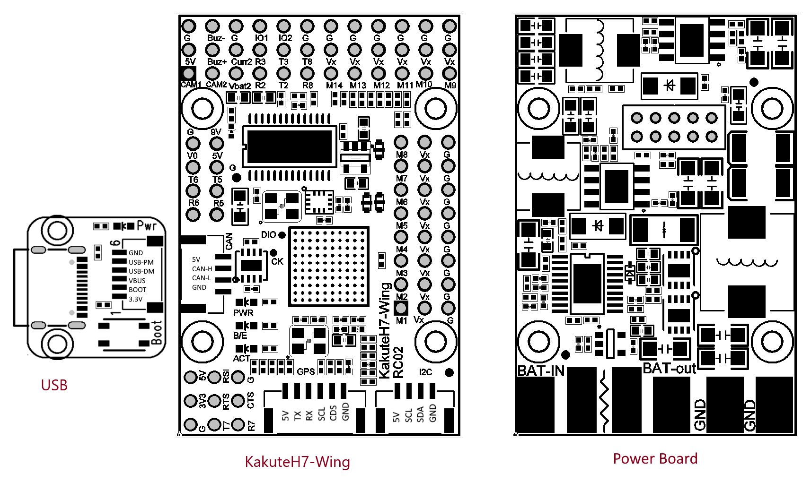

Holybro KakuteH7-WING¶
Specifications¶
- Processor
STM32H743 32-bit processor
AT7456E OSD
- Sensors
ICM42688 Acc/Gyro
BMP280 barometer
- Power
Separate stacked power supply and power monitor board for isolation
2S - 8S Lipo input voltage with voltage monitoring
9V/12V, 1.5A BEC for powering Video Transmitter
6V/7.2V, ?A BEC for servos
3.3V, 1A BEC
- Interfaces
14x PWM outputs DShot capable, 4 outputs BiDirDShot capable
1x RC input
6x UARTs/serial for GPS and other peripherals
2x I2C ports for external compass, airspeed, etc.
USB-C port and boot button on separate dongle for ease of access
Switchable 9V/12V VTX power
2 Switchable Camera inputs
All UARTS support hardware inversion. SBUS, SmartPort, and other inverted protocols work on any UART without “uninvert hack”
Integrated 6S, 120A battery monitor
Input for second battery monitor
Size and Dimensions
45mm x 30mm x 18mm
2??g
Where to Buy¶
Pinouts¶
{kind=link}
Default UART order¶
The UARTs are marked Rn and Tn in the above pinouts. The Rn pin is the receive pin for UARTn. The Tn pin is the transmit pin for UARTn.
SERIAL0 -> USB
SERIAL1 -> UART7 (TELEM1) (DMA enabled) with CTS/RTS
SERIAL2 -> UART2 (TELEM2) (DMA enabled)
SERIAL3 -> UART1 (GPS) (DMA enabled)
SERIAL4 -> UASRT3 (GPS2)
SERIAL5 -> UART5 (User) (DMA capable)
SERIAL6 -> USART6 (RX is normally only RC input, but can be used as normal UART RX if BRD_ALT_CONFIG =1
SERIAL7 -> UART8 (User) (DMA capable)
Serial protocols shown are defaults, but can be adjusted to personal preferences.
Servo/Motor Outputs¶
The KakuteH7 supports up to 14 PWM outputs. Outputs 1-10 support DShot. Outputs 5-8 support BiDirDshot.
The PWM is in 5 groups:
PWM 1-4 in group1
PWM 5,6 in group2
PWM 7,8 in group3
PWM 9,10 in group4
PWM 11-13 in group5
PWM 14 in group6
RC Input¶
The RX6 (UART6 RX), is by default is mapped to a timer input instead of the UART, and can be used for all ArduPilot supported receiver protocols, except CRSF/ELRS and SRXL2 which require a true UART connection. However, FPort, when connected in this manner, can provide RC without telemetry.
To allow CRSF and embedded telemetry available in Fport, CRSF, and SRXL2 receivers, the RX6 pin can also be configured to be used as true UART6 RX pin for use with bi-directional systems by setting the BRD_ALT_CONFIG to “1” so it becomes the SERIAL2 port’s RX input pin.
With this option, SERIAL6_PROTOCOL must be set to “23”, and:
PPM is not supported.
DSM/SRXL connects to the RX2 pin, but SBUS would still be connected to SBUS.
FPort requires connection to TX2 and RX2 via a bi-directional inverter. See [copywiki destination=”plane,copter,rover,blimp”].
CRSF also requires a TX2 connection, in addition to RX2, and automatically provides telemetry.
SRXL2 requires a connection to TX2 and automatically provides telemetry. Set SERIAL6_OPTIONS to “4”.
Any UART can be used for RC system connections in ArduPilot also, and is compatible with all protocols except PPM (SBUS requires external inversion on other UARTs). See Radio Control Systems for details.
USB Power¶
When connected to USB, pins marked 5V are powered. Be careful not to overload the USB host’s current capability. Powering the autopilot, and an RX and GPS is usually within most USB host’s capabilities, however.
OSD Support¶
The KakuteH7-Wing supports using its internal OSD using OSD_TYPE 1 (MAX7456 driver). External OSD support such as DJI or DisplayPort is supported using UART5 or any other free UART. See MSP OSD for more info.
Camera and VTX Control¶
The pin marked 9V (can be selected by jumper on the rear of the board to be 9V or 12V).
Switching between the two camera inputs, C1 (default on) or C2, and between on (default) and off of the 9V supply pin can be implemented using the Relay function of ArduPilot and assigning the relays to an RCx_OPTION switch on the transmitter.
Set the RELAYx_PIN to “82” for on/off of 9V supply, and to “81” to control the camera switching.
Then select an RC channel for control (Chx) and set its RCx_OPTION to the appropriate Relay (1-4) that you had set its pin parameter above.
For example, use Channel 10 to control the camera switch using Relay 2:
RELAY_PIN2 = “81”
RC10_OPTION = “34” (Relay2 Control)
Note
setting Relay on/high assigned for 9V pin will turn on that supply. Likewise, setting on/high for the Relay assigned for camera, will switch from Camera 1 to Camera 2.
CAN¶
The KakuteH7-Wing has one CAN port (port 1 parameters should be used) available for connecting CAN and DroneCAN peripherals such as GPS and airspeed sensors. See CAN Bus Setup for more information on setup.
Battery Monitor Configuration¶
The board has a built-in voltage and current sensor. The current sensor can read up to 120 Amps. The voltage sensor can handle up to 6S LiPo batteries.
The correct battery setting parameters are:
Enable Battery monitor.
BATT_MONITOR =4
Then reboot.
BATT_VOLT_MULT 18.18
BATT_AMP_PERVLT 36.6
Connecting a GPS/Compass module¶
This board does not include a GPS or compass so an external GPS/compass should be connected to the GPS/Compass in order for autonomous modes to function. A JST-GH connector for GPS/Compass is provided.
Firmware¶
This board does not come with ArduPilot firmware pre-installed. Use instructions here to load ARduPilot the first time Loading Firmware onto boards without existing ArduPilot firmware.
Firmware for this board can be found here in sub-folders labeled “KakuteH7-Wing”.
[copywiki destination=”plane,copter,rover,blimp”]